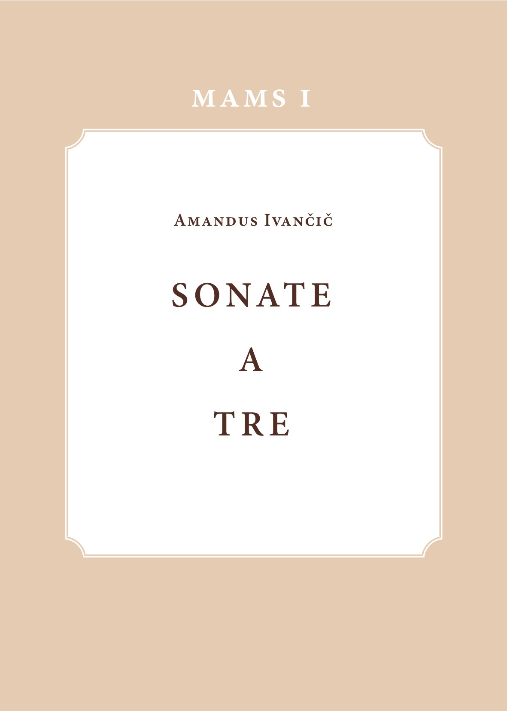

Amandus Ivančič
Prva spletna izdaja / First Online Edition

ZRC SAZU, Muzikološki inštitut, SAZU
Ljubljana
2020
Amandus Ivanschiz (Ivančič), ki je bil po priimku sodeč južnoslovanskega porekla, sodi med danes manj znane skladatelje 18. stoletja, čeprav je bil v svojem času razmeroma močno prisoten v srednjeevropskem glasbenem prostoru. O tem priča ok. 200 njegovih skladb, ki so se v prepisih ohranile širom srednje Evrope: v slovenskih, hrvaških, avstrijskih in čeških arhivih. Izvajalcem in raziskovalcem glasbene kulture je danes še vedno dostopen le majhen del njegovega opusa. Prvi zvezek zbirke MAMS prinaša pet sonat »a tre« (triosonat) v sodobni notni izdaji. Zvezek je opremljen z uvodno študijo o življenju in delih patra Amandusa ter z novim uvodom Macieja Jochymczyka, ki prinaša novosti o skladatelju in popravke zgodnejšega vedenja.
Amandus Ivanschiz (in Slovenian literature “Ivančič”), due to his surname thought to be of South-Slave origin, belongs to a group of today little known 18th-century composers, but was in his own time all over Central Europe well known and largely copied monastic composer. Around 200 compositions survived to this date in various copies now preserved in Slovenian, Croatian, Austrian, Czech, etc. archives. However, only a few of his compositions are available to modern performers. Volume 1 of the Monumenta artis musicae Sloveniae series comprises five trio sonatas which are accompanied by an introductory presentation of the composer and his works as well as by a New Introduction and Corrigenda by Maciej Jochymczyk bringing to the reader’s attention new information on father Amandus and corrigenda of the earlier edition.